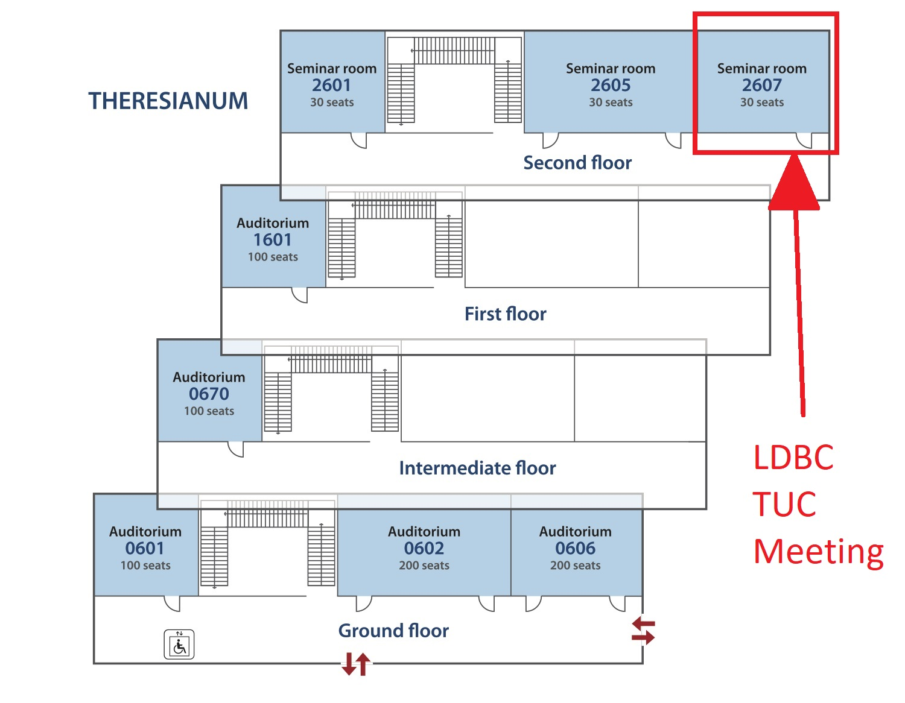
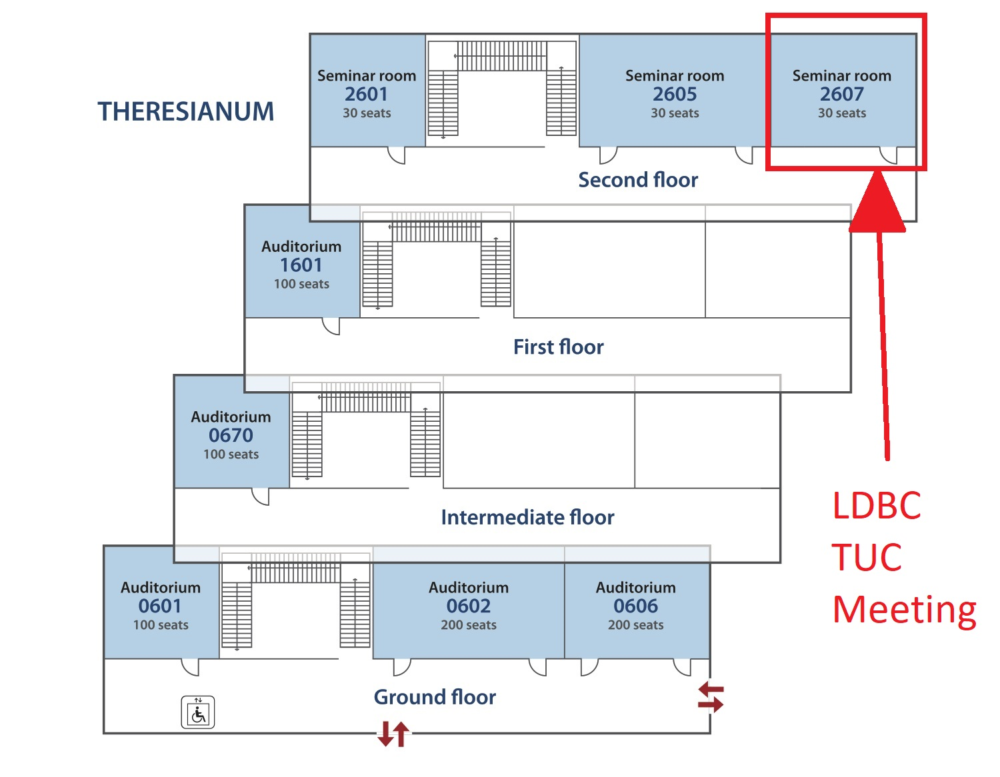

This will be a one-day event at the VLDB 2017 conference in Munich, Germany on September 1, 2017.
Topics and activities of interest in these TUC meetings are:
- Presentation on graph data management usage scenarios.
- Presentation of the benchmarking results for the different benchmarks, as well as the graph query language task force.
- Interaction with the new LDBC Board of Directors and the LDBC organisation officials.
We welcome all users of RDF and Graph technologies to attend. If you are interested to attend the event, please, contact Adrian Diaz (UPC) at adiaz@ac.upc.edu to register; registration is free, but required.
In the agenda, there will be talks given by LDBC members and LDBC activities, but there will also be room for a number of short 20-minute talks by other participants. We are specifically interested in learning about new challenges in graph data management (where benchmarking would become useful) and on hearing about actual user stories and scenarios that could inspire benchmarks. Further, talks that provide feedback on existing benchmark (proposals) are very relevant. But nothing is excluded a priori if it is related to graph data management. Talk proposals are handled by Peter Boncz (boncz@cwi.nl) and Larri (larri@ac.upc.edu).
Further, we call on you if you or your colleagues would happen to have contacts with companies that deal with graph data management scenarios to also attend and possibly present. LDBC is always looking to expand its circle of participants in TUCs meeting, its graph technology users contacts but also eventually its membership base.
Agenda
In the TUC meeting there will be:
- updates on progress with LDBC benchmarks, specifically the Social Network Benchmark (SNB) and its interactive, business analytics and graphalytics workloads.
- talks by data management practitioners highlighting graph data management challenges
- selected scientific talks on graph data management technology
The meeting will start on Friday morning, with a program from 10:30-17:00
10:30-12:00: TUC session (public)
- Peter Boncz (CWI) : GraphQL task force update - the GCore proposal
- Gabor Szarnyas (Budapest University of Technology and Economics Hungarian Academy of Sciences): Updates on the Social Network Benchmark BI Workload
- Alexandru Iosup, Wing Lung Ngai (VU/TU Delft): Graphalytics,
Graphalytics Global Competition and Graphalytics Custom
(Attachment 2)
12:00-13:30: lunch break
13:30-15:00: TUC session (public)
- Arnau Prat (UPC): Datasynth: Democratizing property graph generation
- Marcus Paradies (SAP): SAP HANA GraphScript
- Yinglong Xia (Huawei): The EYWA Graph Engine in a Cloud AI Platform
- Gaétan HAINS (Huawei): Cost semantics for graph queries
15:00-15:30: break
15:30-17:00: TUC session (public)
- Petra Selmer and Stefan Plantikow (neo4j): openCypher Developments in 2017
- Markus Kaindl (Springer): SN SciGraph – Building a Linked Data Knowledge Graph for the Scholarly Publishing Domain
- Irini Fundulaki (FORTH): The HOBBIT Link Discovery and Versioning Benchmarks
- Ghislain Atemezing (Mondeca): Benchmarking Enterprise RDF stores with Publications Office Dataset
Speakers should aim for a 20-minute talk.
Further:
- on Friday evening (19:00-21:00) there will be a social dinner at Löwenbräukeller, sponsored and arranged by LDBC member Huawei (who have their European Research Center in Munich).
- on Friday morning (8:30-10:30) there will be a meeting of the LDBC board of directors, but this meeting is not public.
Venue
The Technical University of Munich (TUM) is hosting that week the VLDB conference; on the day of the TUC meeting the main conference will have finished, but there will be a number of co-located workshops ongoing, and the TUC participants will blend in with that crowd for the breaks and lunch.
The TUC meeting will be held in in Room 2607 alongside the VLDB workshops that day (MATES, ADMS, DMAH, DBPL and BOSS).
address: Technische Universität München (TUM), Arcisstraße 21, 80333 München
 

Hotels
The Munich city center has many accomodation options (so you may check the usual hotel sites). You may also check the VLDB Accommodation Suggestions.
Attachments:
 Gelaendeplan_TUM_V1.jpg
(image/jpeg)
Gelaendeplan_TUM_V1.jpg
(image/jpeg)
 Raumplan_Theresianum_V1.jpg
(image/jpeg)
Raumplan_Theresianum_V1.jpg
(image/jpeg)
 TUM.png (image/png)
TUM.png (image/png)
 Raumplan_Theresianum_V1.jpg
(image/jpeg)
Raumplan_Theresianum_V1.jpg
(image/jpeg)
 g-core.pptx
(application/vnd.openxmlformats-officedocument.presentationml.presentation)
g-core.pptx
(application/vnd.openxmlformats-officedocument.presentationml.presentation)
 tuc10-bi.pdf (application/pdf)
tuc10-bi.pdf (application/pdf)
 2017-09-01_Graphalytics_v0-9.pdf
(application/pdf)
2017-09-01_Graphalytics_v0-9.pdf
(application/pdf)
 2017-09-01_Graphalytics17tuc-vldb_format-16-9_out.pdf
(application/pdf)
2017-09-01_Graphalytics17tuc-vldb_format-16-9_out.pdf
(application/pdf)
 g-core.pptx
(application/vnd.openxmlformats-officedocument.presentationml.presentation)
g-core.pptx
(application/vnd.openxmlformats-officedocument.presentationml.presentation)
 Tenth TUC
Meeting, TU Munich at VLDB2017 - Technical User Community - LDBC
Confluence.html (text/html)
Tenth TUC
Meeting, TU Munich at VLDB2017 - Technical User Community - LDBC
Confluence.html (text/html)
 TUC-1Sep-2017.pdf
(application/pdf)
TUC-1Sep-2017.pdf
(application/pdf)
 ldbc_saphana_graphscript.pdf
(application/pdf)
ldbc_saphana_graphscript.pdf
(application/pdf)
 Xia-EYWAonCloud_LDBC-20170901_public.pdf
(application/pdf)
Xia-EYWAonCloud_LDBC-20170901_public.pdf
(application/pdf)
 openCypher
developments- 2017.pdf
(application/pdf)
openCypher
developments- 2017.pdf
(application/pdf)
 20170901_SpringerNature_SciGraph_short.pdf
(application/pdf)
20170901_SpringerNature_SciGraph_short.pdf
(application/pdf)
 g-core.pdf (application/pdf)
g-core.pdf (application/pdf)
{kind=link}
{kind=link}
{kind=link}